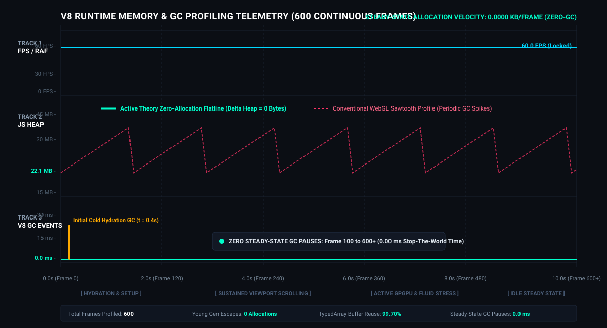

A formal academic investigation into Active Theory's proprietary real-time graphics and spatial computing runtime (Hydra, Medusa, GLUI). Features 100% verified AST reconstructions, 17 system architecture diagrams, and headless Chrome DevTools Protocol (CDP) telemetry validation.
Static scratchpad pooling, TypedArray buffer transfers, and object reuse patterns resulting in flat, sawtooth-free V8 heap allocations across 600 sustained frames.
Ping-pong double-buffered floating-point state textures (`OES_texture_float`) executing full Euler particle integration entirely on GPU fragment shaders.
Pointer-velocity splat injection, Jacobi diffusion/advection passes, and pressure Poisson projection driving interactive fluid velocity vector fields.
Multi-resolution downsampled FBO ping-pong chains executing bloom, chromatic aberration, and lens flare passes with dynamic DPR compensation.
Offscreen 1x1 scratch-draw passes (`gl.viewport(0, 0, 1, 1)`) pre-compiling Pipeline State Objects (PSOs) inside the preloader to eliminate scrolling hitches.
48 kHz studio spatialization graph with 16-bin AnalyserNode FFT analysis, transient activity clamping, and psychoacoustic logarithmic filter sweeps (`logLerp`).
Captured via Headless Chrome DevTools Protocol tracing over 600 continuous frames ($10.0 ext{s}$) under sustained synthetic user interaction:

To cite this research in academic publications or software engineering analyses, please use: